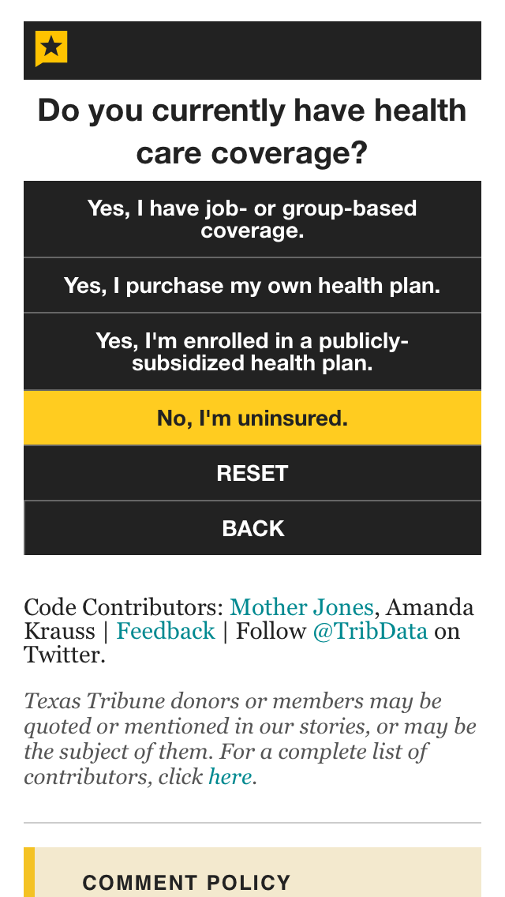
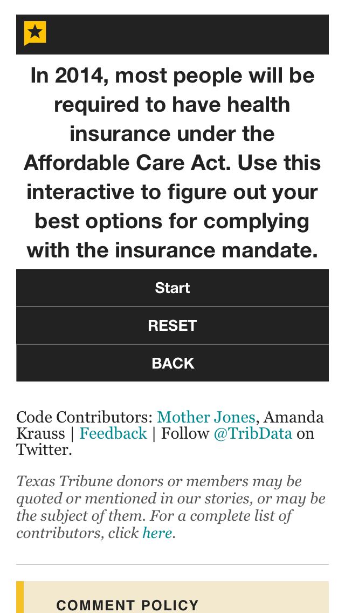

Visual Journalism
for Tiny News Desks
#ONA14tinynewsviz
jaeahlee.github.io/ona14-tinynewsviz
Hello!
Becca Aaronson | Texas Tribune | @becca_aa
Christopher Kirk | Slate | @chrkirk
Jaeah Lee | Mother Jones | @jaeahjlee
1. Always Be Visualizing.
- What’s the story?
- What part of the story is best told visually?
- What's better told through text?
- Effective + Simple > Fancy
- Is this a visualization type you think will be used again?
Tips to live by:
- Stay organized: What's the time peg? Will the data need to be fact-checked? Copy edited?
- Work in teams: Story editor + reporter + lead producer + who else?
- Divide and conquer.
- Avoid taking on ambitious projects with hard deadlines.
- Say yes, but sometimes you have to say no.
- Bring them along for the ride.
2. Insource when possible.
Train your newsroom, build an army.
Some of our favorite resources:
- Charting: Datawrapper, Google Spreadsheets, HighCharts, Chart.js
- Surveys: Google Forms, SurveyMonkey
- Mapping: CartoDB, Mapbox
- Also: Your in-house Art Department and Web Developers
3. Iterate Iterate Iterate
"We have a tendency to pour resources into big one-time projects and work through the one-time fixes needed to create them and overlook the less glamorous work of creating tools, templates and permanent fixes that cumulatively can have a bigger impact by saving our digital journalists time and elevating the whole report. We greatly undervalue replicability."
—New York Times innovation report


4. Think mobile first.
"A simple mobile presentation that works is better than a fancy one that's broken."
— David Ho, mobile editor, Wall Street Journal


But a simple "desktop first" design works, too.
5. Outsource when possible.
Open source tools to try:
- Mother Jones: newsquiz, CYOA, simple vector mapper, all powered by Google Spreadsheets
- NPR: Pym.js, App Template, Copytext.py
Newsquiz

Choose Your Own Adventure

CYOA - Texas Tribune style
 Crowdsource your data reporting.
Slate Gun Deaths

NPR's Playgrounds For Everyone

More helpful libraries:
- Mapping: Mapbox.js, Leaflet.js, D3/D3 Datamaps
- DOM manipulation: jQuery
- Drawing: Raphael.js
6. Always Be Documenting.

Avoid ending up like this.
7. Level up++.
Learn a new language.
- HTML, CSS, Javascript: Start building things on the web.
- SASS: use variables, create mixins, and set up a thoughtful file architecture to move styles between projects
- Coffeescript (maybe)
- The command line: (it's not that scary — The Hard Way, Another Way)
SASS: Faster CSS

Coffeescript: Faster javascript

8. Audit your workflow.

Speed up common development processes.

Texas Tribune Style Guide + Grunt

9. We're all still learning.
Thanks! And stay in touch.
baaronson@texastribune.org
chris.kirk@slate.com
jaeahjlee@gmail.com